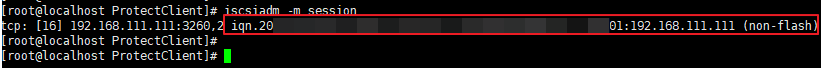

In Ethernet networking scenarios, you need to log in to the iSCSI initiator on the agent host by referring to this section if you want to use the SAN transmission mode or use the storage-layer backup mode for VM disks of datastores created based on OceanStor Dorado LUNs.
Prerequisites
The iSCSI initiator (iscsi-initiator-utils) has been installed on the agent host. For details, see "Installing iSCSI Initiators" in the OceanProtect Appliance 1.5.0 ProtectAgent Installation Guide.
Procedure
- Log in to the production storage device corresponding to the ESXi datastore and query the iSCSI logical port to obtain the IP address of the logical port.
- Log in to DeviceManager.
- Choose Services > Network > Logical Ports.
- On the displayed page, query the logical port with Data Protocol being iSCSI and record the IP address of the logical port.
- On the agent host, run the following commands in sequence to log in to the iSCSI initiator (IP indicates the IP address of the logical port obtained in 1):
iscsiadm -m discovery -t st -p IP iscsiadm -m node -l -p IP

- On the agent host, run the iscsiadm -m session command to view the session information and obtain the IQN.

- Check whether the IQN is online on the production storage device corresponding to the ESXi datastore.
- Log in to DeviceManager.
- Choose Services > Block Service > Host Groups > Initiators > iSCSI.
- Switch to the iSCSI tab page and query the IQN obtained in 3. If Status of the IQN is Online, the IQN status is normal.